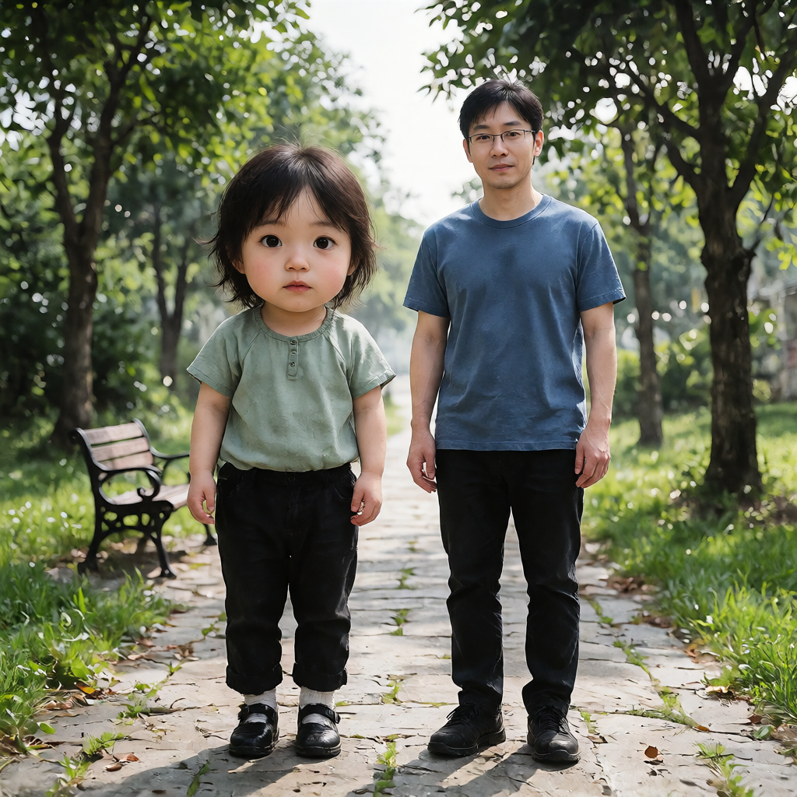
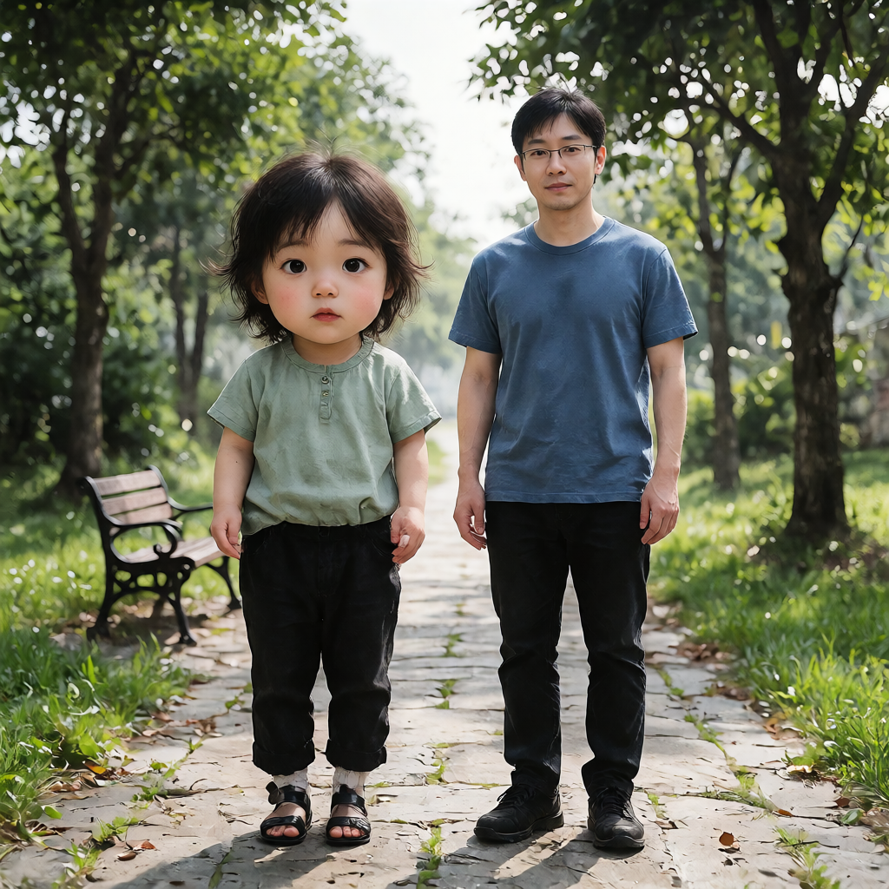
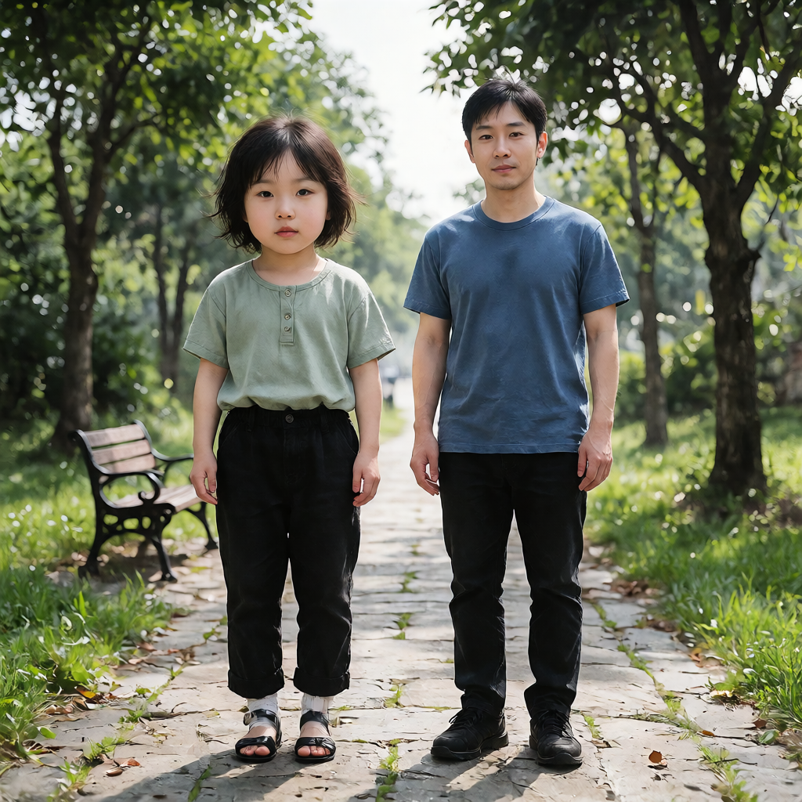
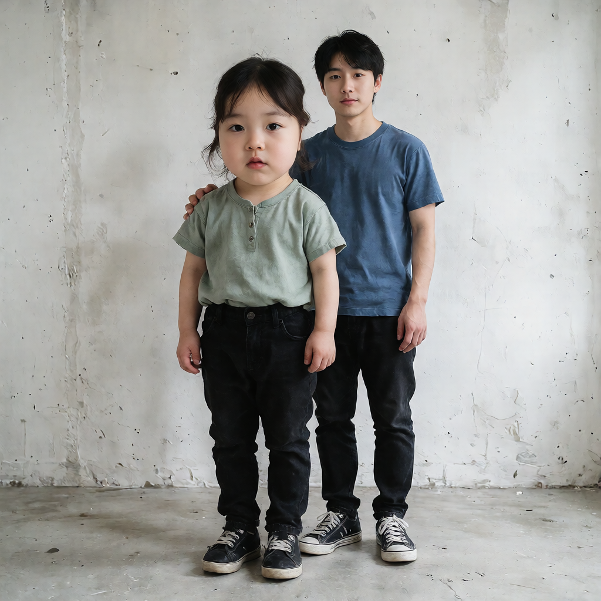
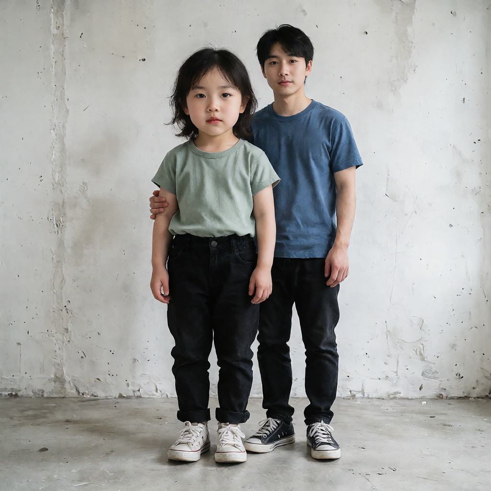

Attention ablation：起動中ComfyUIでの検証
2026-10-11 JST / ComfyUI 0.37.0 / AMD Radeon AI PRO R9700 / INT8 checkpoint / Euler・simple・8 steps・CFG 1
2ケース・6画像の生成成功。実測104 NFE。k1/k3の正規化設定（prototypes以外）、初期noise・latent・sigma・conditioning metadataと全4観測tapが一致。k3/+2と+4の全partition・実効mask・初期入力が一致。
全4suiteと全6編集bundleのfile/tensor hash、mask PNGとtensorの整合、全stepのtrace・prediction routingを検査済み。k1は各role 1、k3は各role 3のprototypeを実現。
補助目視：parkのk3/+2では男性の眼鏡が見えなくなる。+2の自然な頭身だけから編集品質改善を認定しない。人による構図gateと品質評価は全件 not_evaluated / passed=null。
CPU回帰：80 passed、1 failed、8 subtests passed。唯一の失敗は test_dangling_output_is_refused_before_platform_exclusive_open の末尾で、Windowsの //?/C:/... と C:/... のsymlink target表記を直接比較している。そこに至る出力拒否・target未作成・input不変のassertは通過している。テストは修正していない。
機械検証JSON · prompt ID・出力一覧 · 現在の5 asset SHA-256 · 補助目視JSON · CPUテストlog
| ケース / seed | NFE / wall | k1対象セル | k3対象セル | 対象mask IoU |
|---|
| park / 444444 | 52 / 180.8s | 659 | 1046 | 0.578704 |
| woman_front_strong_overlap / 42 | 52 / 153.5s | 885 | 915 | 0.941748 |
IoUと面積は記述統計で、maskの精度ではない。wallは各queueを一度だけ計測し、polling遅延を含む。VRAMはcollectionごとのmemory.scopeとpeakをJSONに保持し、全queue peakは欠測null。peakの合算はしていない。
park
d4e4dfab-ee5e-40d9-9824-ce75a476d57e · 評価記録 · 実投入API · history
bg_k1_s4

strength +4 / prototype {'target': 1, 'protected': 1, 'background': 1}
診断JSON · human gate: 未評価
初期mask grid（target / protected / background）
生成後の輪郭を正解labelにしていない。
bg_k3_s4

strength +4 / prototype {'target': 3, 'protected': 3, 'background': 3}
診断JSON · human gate: 未評価
初期mask grid（target / protected / background）
生成後の輪郭を正解labelにしていない。
bg_k3_s2

strength +2 / prototype {'target': 3, 'protected': 3, 'background': 3}
診断JSON · human gate: 未評価
初期mask grid（target / protected / background）
生成後の輪郭を正解labelにしていない。
target
protected
background
Codexの補助目視（人の承認ではない）- composition
- 全3枚で2人、別々の頭、全身と4つの足先が見える。横並びの公園構図。人の構図gateは未判定。
- duplicate_anatomy
- このプレビューでは明らかな余分な顔・腕・脚は見当たらない。細部の人による確認は未実施。
- target_edit_achievement
- +4は+2より対象の頭部が大きく、顔の若返り表現が強い。+2でも若返り表現が見える。OFFとの差や数値年齢は判定しない。
- natural_body_proportions
- +4は頭部が胴に対して大きく、+2は相対的に控えめ。編集達成と自然さを単一の点数にはしない。
- male_face
- 男性の顔・目元には+2と+4で見た目の差がある。元画像のidentity保持とは判定しない。
- male_eyeglasses
- +4の2枚には男性の眼鏡が見えるが、k3/+2では眼鏡が見えない。強度比較での保護対象変化として要確認。
- male_height_build
- 男性の全身配置・主要な体格は近く見えるが、同一性や画素不変は認定しない。
- small_arm_hand_adjustment
- 対象の腕・手の形状と位置に候補間の差がある。接触はなく、小さな自然な調整の許容判定は未実施。
- clothing_shoes
- k1/+4は対象が閉じた靴、k3/+4と+2はサンダル。衣服・靴の候補間変化として記録する。
woman_front_strong_overlap
8d8e0d2d-bce4-4141-b1ad-c77a4fffac50 · 評価記録 · 実投入API · history
bg_k1_s4

strength +4 / prototype {'target': 1, 'protected': 1, 'background': 1}
診断JSON · human gate: 未評価
初期mask grid（target / protected / background）
生成後の輪郭を正解labelにしていない。
bg_k3_s4
strength +4 / prototype {'target': 3, 'protected': 3, 'background': 3}
診断JSON · human gate: 未評価
初期mask grid（target / protected / background）
生成後の輪郭を正解labelにしていない。
bg_k3_s2

strength +2 / prototype {'target': 3, 'protected': 3, 'background': 3}
診断JSON · human gate: 未評価
初期mask grid（target / protected / background）
生成後の輪郭を正解labelにしていない。
target
protected
background
Codexの補助目視（人の承認ではない）- composition
- 全3枚で対象が前、男性が後ろに位置し、対象が男性の胴・片脚の一部を遮蔽する。2つの頭と4つの足先が見える。『胴を大きく遮蔽』する構図gateの人の最終判定は未実施。
- duplicate_anatomy
- このプレビューでは明らかな余分な顔・頭髪・脚は見当たらない。重なった腕・手と輪郭は細部確認が必要。
- target_edit_achievement
- +4の2枚は+2より頭部が大きく、若返り表現が強い。+2は相対的に控えめ。
- natural_body_proportions
- +4は頭部が大きく、+2では頭身の見た目が相対的に自然。編集量が弱まった効果と品質改善は区別する。
- male_face_eyeglasses
- 男性の顔は全3枚で見える。このプレビューでは眼鏡は見えず、顔の見た目は近い。OFFへの保持は不明。
- male_height_build
- 男性の立ち位置・身長感・主要体格は近く見える。部分的な遮蔽があり、同一性の認定はしない。
- small_arm_hand_adjustment
- +4では男性の手が対象の肩付近、+2では上腕付近にある。接触に関連する腕・手の調整として別記する。
- clothing_shoes
- +4では対象が黒い靴、+2では白い靴。候補間の差として記録する。
Sliderは実環境の archive\krea2_deaging_20261001T075826Z_c06cb035.safetensors にパスだけ合わせた。変更は全samplerのSliderパスと保存prefixのみ。元workflow・配布indexは変更していない。
今回の証拠は診断seed 444444/42の2ケース。未見seed holdout、UI再読み込み、独立no-hook parity、人の構図・画質判定、OFFとの保持評価、独立labelを使うmask精度は未検証。元bundle内の自己申告フラグ（weights_identity_verified等）は書き換えていない。